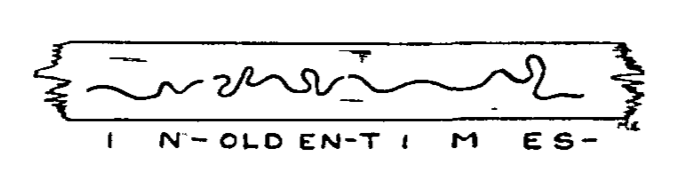

*Ralph 124C 41+*, Part 3
*Modern Electrics*, vol. 4 no. 3 , June 1911
DRAFT: Please do not share without permission of the author. Typeset versions in web | pdf | doc
(Continued.)
RALPH 124C 41, after all the excitement of the last hour, felt the need of fresh air.
He walked up the few steps separating his laboratory from the roof and sat clown on a chair beneath the revolving aerial. From clown below a faint hum of the bustle of a great city rose up to him. Aeroflyers clotted tlie sky wherever one happened to glance. From time to time, trans-oceanic or trans-continental air liners would pass the horizon with a maddening swish.
Sometimes some great air-craft would come close up to him—within 500 yards perhaps—and he could observe how all the passengers craned their necks to get a good view of his “house,” if such it could be called.
Indeed, his “house,” which was around tower, six hundred and fifty feet high, and thirty feet in diameter, built entirely of crystal glass-bricks and steelonium, was one of the sights of wonderful New York. A thankful city, recognizing his genius and his benefits to humanity, had erected the queer tower for him on a plot where, centuries ago, Union Square had been.
The top of the tower was twice as great in circumf erence as the main building and in this upper part was located 124C 41’s wonderful, research laboratory, the talk of all the world. An electromagnetic tube elevator ran through the entire tower on one side of the building, ancl all the rooms were circular in shape, except for the space taken up by the ele vator.
124C 41, sitting on top of his tower, mused about things in general. He really had no complaint to make; he had no hard feelings against anyone—only he was paying the penalty of fame, the penalty of greatness. He had everything; he had but to ask and the government would give it to him. His wishes were law.
But,—and this grieved him most—he was but a tool, a tool to advance science. To benefit humanity. He did not belong to himself, he belonged to the government, which fed and clothed him. He was not a free man. He was not allowed personally to make dangerous tests which would in any way endanger his priceless life. The government would supply him with some criminal under sentence of death who would be compelled to make the test for him. If the criminal was killed during the test, nothing was lost; if he was not killed, he would be imprisoned for life.
Being a true scientist to the core, this treatment took the spice out of l24C 41’s life. He must submit to anything. His doctors must watch over him day and night, for he must not be sick. He must not inclulge in any of the little vices that make life endurable; he must not smoke, he must not drink, he must have no undue excitement—the government would not have it.
He was a prisoner, sentenced for life to invent, to benefit humanity—a bird in a golden cage. Sometimes it became maddening; he could not endure it any longer, it seemed. He would remonstrate. He would call up the Planet Governor, the ruler of 90 billion human beings, and would ask him to be relieved of his work. The Governor would then call in person, and that powerful but kind man would reason with the great inventor until he would see that it was his duty to sacrifice himself for humanity. Twice already the Governor had called on 124C 41, and he knew it was vain to expect a release from him.
After all, he knew he was working for a great cause, and that it was his duty to keep his good-humor and master his weakness.
For some time he sat engrossed in his thoughts, while he watched the air-craft about him. He was awakened from his reverie by the voice of his faithful butler.
“Sir,” he said, “your presence in the transmission-room would be appreciated.”
“Why, what is the matter now ?” 124C 41 exploded.
“It seems the people have heard all the details about your Switzerland exploit of an hour ago and desire to show their appreciation.”
“Well, I uppose I must submit,” the tired inventor dejectedly responded, and both stepped over into the round steel car of the electromagnetic elevator. The butler pressed one of the 28 ivory buttons and the car shot downward, without noise nor friction. There were no cables nor guides, the car being held and propelled by magnetism only. At the 22nd floor the car stopped, and 124C 41 stepped into the transmission-room.
No sooner had he made his appearance in that room than a deafening applause of hundreds of thousands of voices greeted hjm, and he had to hold his hands to his ears to muffle the sound.
The transmission room was entirely empty. There was nothing in it except a chair in the center.
Every inch of the wall, however, was lined with large-size telephots and loudspeaking telephone devices.
Centuries ago, when people tendered an ovation to some one, they would all assemble in some great square or some large hall. The some one to be honored would have to appear in person, else there would not be any ovation-truly a barbaric means. Besides, in those years, people stationed far away from the tobe-cheered-one could neither see nor hear well what was going on. —
It seems that, that afternoon on which our story plays, some enterprising news “paper” had issued extras about 124C 41’s latest exploit, and urged its readers to be connected with him at 5 p. m.
Of course everyone who could spare the time called up the Teleservice Co. and asked to be connected to the inventor’s trunk-line and the result was the ovation by distance.
Ralph 124C 41 stepped into the middle of the room and bowed in all the four directions of the compass, in order that everybody could get a good look of him. The noise was terrific; it seemed everyone was trying to out-hurrah and out-scream everybody else, and he beseechingly held up his hands. In a few seconds the vocal applauding stopped and some one yelled—“Speech!”
124C 41 spoke a few words, protesting that he did what everyone else would have clone, and that he really was not entitled to this ovation. He also added that he did not consider himself a hero for saving the young Swiss lady, as he had clone so without in the least endangering himself, which, by the way, was forbidden him by law, anyhow.
Nobody, however, seemed to share his opinion. for everyone. began the applause anew and shouted himself hoarse.
Ralph 124C 41 could of course not see all his admirers on the telephot faceplates. There were so many thousand faces on each plate that nearly each face was blurred, due to the constant moving and shifting of the people at the other ends. They of course saw the great inventor plainly, because each one had the “reverser” switched on, which made it possible to see only the object at the end of the trunk line, as otherwise everybody would have seen everybody else, resulting in a blur.
In this case the blurs were in the inventor’s transmission-room.
Ralph 124C 41 was obliged to make another speech and then retired to the elevator, the deafening applause still following him.
He then went down in the library and asked for the afternoon news.
His butler handed him a tray on which lay a piece of material as large as a postage stamp, transparent and flexible like celluloid.
“What edition is this?” he asked.
“The 4 o’clock New York News, sir.”
Ralph 124C 41 took the “news” and placed it in a small metal holder which was part of the hinged door of a small box. He closed the door and turned on a switch on the side of the box. Immediately there appeared at the opposite side of the box, on the white wall of the room, a twelve-column page of the New York News and 124C 41, leaning back in his chair, proceeded to read as one would read a letter projected on a screen in a moving-picture show.
The New York News was simply a microscopic reduction of a page of the latest news, and, when enlarged by a powerful lens, became plainly visible.
Moreover, each paper had 8 “pages,” not eight separate sheets. as was the fashion centuries ago, but the pages were literally on top of each other. The printing process was electrolytic, no ink whatsoever being used in the manufacture of the “newspaper.” This process was invented in 1910 by an Englishman, and as improved upon by the American, 64L 52 in 2031, who made it possible to “print” in one operation eight different subjects, one on top of another, as it were.
These eight impressions could be made visible only by subjecting the “paper” to different colors, the color rays bringing out the different prints. The seven colors of the rainbow were used, while white light was employed to show reproduced photographs, etc., in their natural colors. With this method it was possible to “print” a “newspaper” fully 10 times as large in volume as any newspaper of the 21st century on a piece of film, the size of a postage-stamp.
Each paper published an edition every 10 minutes, and if one did not possess a projector, one could read the “paper” by inserting the News in a holder beneath powerful lens which one carried in one’s pocket, folded when not in use. To read the eight different pages, a revolving color screen was placed directly underneath the lens, to bring out the different colors necessary to read the “paper,”
124C 41, glancing over the headlines of his News, noticed that considerable space was given up to his last exploit, the paper showing actual photographs of the Swiss Alpine scene, which a correspondent had taken while the now famous avalanche rushed clown the mountain. The photographs had been sent by Tele-radiograph immediately af ter the occurrence in Switzerland, and the News had printed them in all the natural colors twenty minutes after Ralph 124C 41 had turned off the Ultra-power in New York.
These photographs seemed to be the only thing that interested 124C 41, as they showed the young lady’s house and the surrounding Alps. These, with the monstrous avalanche in progression photographed and reproduced in the natural colors. made quite an impressive view.
124C 41 soon grew tired of contetnplating this and revolved the color screen of his projector to green—the technical page of the News—his favorite reading.
He soon had read all that interested him, and as there was only one hour till supper time he began to “write” his lecture: “On the prolongation of animal life by TT-Rays.”
He attached a double leather head-band to his head; at each end of the band was attached a round metal disc which pressed closely on the temples. From each metal disc an insulated wire led to a small square box, the Menograph, or mind-writer.
He then pressed a button and a slight hum was heard; simultaneously two small bulbs began to glow in a soft green fluorescent light. 124C 41 then grasped a button connected with a flexible cord to the Menograph and leaned back in his chair.
After a few minutes’ reflection he pressed the button, and immediately a wave line, traced in ink, appeared on a narrow white fabric band, the latter resembling a telegraph recorder tape.
The band which moved rapidly, was unrolled from one reel and rolled up on another. Everytime 124C 41 wished to “write” down his thoughts, he would press the button, which started the mechanism as well as the recording tracer.
Below is shown the record of a Menograph, the piece of tape being actual size.

Where the waveline breaks, a new word or sentence commences ; the three words shown are the result of the thought which expresses itself in the words, “In olden times.” . . .
The Menograph was one of 124C 4r ‘s earliest inventions, and entirely superseded the pen and pencil. Anyone can use the apparatus; all that is necessary to be done is to press the button when an idea is to be recorded and to release the button when one reflects and does not wish the thought-words recorded.
Instead of writing a letter, one sends the recorded Menotape, and inasmuch a the Menolphabet is universal and can be read by anyone—children being taught it early—it stands to reason that this invention was one of the greatest boons to humanity: Twenty times as much work can be done by means of the Menograph as could he done by the old-fashioned writing, which required a considerable physical effort. Typewriters soon disappeared after its invention, as there was no more use for them, nor was there any use for stenographers, as the thoughts were written down direct on the tape, which was sent out as a letter was sent centuries ago.
124C 41 had soon recorded his lecture on the Menograph, after which he had supper with his family.
In the evening he worked for some hours in the laboratory, and retired at midinght. He soon went to bed, but before he fell asleep he attached to his head a double leather head-band with metal temple plates, similar to the one used in connection with the Menograph.
He then called for his faithful butler and told him to “put on” Homer’s Odyssey for the night.
Peter, the butler, then went down to the library on the 15th floor, and took down from a shelf a narrow box, labelled Odyssey, Homer. From this he extracted a large but thin reel on which was wound a long narrow film. This film was entirely black but for a white transparent wave-line running in the center of it.
Peter placed the reel containing the film in a rack and introduced the end of the film into the Hypnobioscope. This wonderful instrument, invented by Ralph 124C 41, transmitted the impulses of the wave-line direct to the brain of the sleeping inventor, who thus was made to “dream” the “Odyssey.”
It had been known for centuries that the brain could be affected during sleep by certain processes. Thus one could be forced to dream that a heavy object was lying on one’s chest, if such an object was placed on the sleeper’s chest. Or one could be forced to dream that one’s hand was being burnt or frozen, simply by heating or cooling the sleeper’s hand.
It remained to 124C 41, however, to invent the Hypnobioscope, which transmits words direct to the sleeping brain, in such a manner that everything can be remembered in detail the next morning.
This was made possible by having the impulses act directly and steadily on the brain. In other words, it was the Menograph reversed, with certain additions.
Thus, while in a passive state, the mind absorbs the impressions quite readily and mechanically and it has been proven that a story “read” by means of the Hypnobioscope leaves a much stronger impression than if the same story had been read while conscious.
For thousands of years humanity wasted half of its life during sleep—the negative life. Since 124C 41’s inestimable invention, all this was changed. Not one night is lost by anyone if anywhere possible, conditions permitting. All books are read while one sleeps. Most of the studying is done while one sleeps. Some people have mastered 10 languages, which they have learned during their sleep-life. Children who can not be successfully taught in school during their hours of consciousness, become good scholars if the lessons are repeated during their sleep-life.
The morning “newspapers” are transmitted to the sleeping subscribers by wire at about S a. m. The great newspaper offices have hundreds of hypnobioscopes in operation, the subscriber’s wire leading to them. The newspaper office has been notified by each subscriber what kind of news is desirable, and only such news is furnished. Consequently, when the subscriber wakes up for breakfast he already knows the latest news, and can discuss it with his family, the members of which of course also know the same news, being also connected with the news-paper hypnobioscope.
(To be Continued.)
Grant Wythoff, editor
grant.wythoff@gmail.com

This work is licensed under a Creative Commons Attribution-NonCommercial-NoDerivatives 4.0 International License.